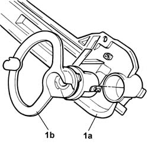
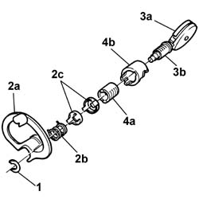

7005C16 LOCK BARREL FOR FRONT SIDE DOOR KEY - R.R. WITH DOOR PANEL REMOVED
- Path
- Procedures > 70 FITTINGS > 7005 PASSENGER COMPARTMENT FRONT SIDE DOORS > 7005C FRONT LOCK CONTROLS > 7005C16 LOCK BARREL FOR FRONT SIDE DOOR KEY - R.R. WITH DOOR PANEL REMOVED
- Kind
- repair procedure (removal / refitting; the operation number is the code)
- Applies to
- all engines; all production periods
- Interactive page
- https://sloeber94.github.io/elrnDB-fUlss/en/#/179007659
Applies to: all engines; all production periods
 Removing
Removing
 Refitting
RefittingSee in Op. 7005M14 ELECTRIC WINDOWS, REAR VIEW MIRRORS and CENTRAL LOCKING switch unit on driver's front door - R.R.
See in Op. 7040E24 LOWER COURTESY LIGHT in FRONT DOOR panel - R.R.
See in Op. 7005A06 FRONT SIDE DOOR LOWER WATER PROTECTION - R.R. OR POSITION WITH PANEL REMOVED
See in Op. 7005E92 Front door anti-intrustion PANEL (one) left or right - R.R. with door panel removed
-
See in Op. 7005E93 EXTERIOR ANTI-INTRUSION PANEL - R.R. WITH DOOR PANEL REMOVED
-
See in Op. 7005C10 Front side door OUTER HANDLE. - R.R. with door panel removed
See in Op. 7005C09 Front door EXTERIOR HANDLE SUPPORT (one), left or right R. R. with door panel removed
1. Release the key lock barrel assembly (1b) from the handle support (1a).

Applies to: all engines; all production periods
- Fit the key in the lock barrel.
1. Remove the circlip using a suitable tool.
2. Remove the idler (2a), the return spring (2b) and the inner mechanisms (2c).
3. Turn the key (3a) and extract it complete with lock barrel (3b).
4. Extract the lock barrerl support (4a) from the casing (4b).

Applies to: all engines; all production periods
Refitting
Removing- Place the lock barrel support inside the casing.
- Insert the lock barrel inside the support.
- Align the lock barrel and the support, turn the key and extract it in order to secure the lock barrel to the support.
- Position the internal mechanisms and the return spring.
- Position the idler and fit the circlip.
- Inser the key and check that the device is working properly.
- Fit the key lock barrel assembly inside the housing in the handle support.
See in Op. 7005C09 Front door EXTERIOR HANDLE SUPPORT (one), left or right R. R. with door panel removed
See in Op. 7005C10 Front side door OUTER HANDLE. - R.R. with door panel removed
See in Op. 7005E93 EXTERIOR ANTI-INTRUSION PANEL - R.R. WITH DOOR PANEL REMOVED
-
See in Op. 7005E92 Front door anti-intrustion PANEL (one) left or right - R.R. with door panel removed
-
See in Op. 7005A06 FRONT SIDE DOOR LOWER WATER PROTECTION - R.R. OR POSITION WITH PANEL REMOVED
See in Op. 7040E24 LOWER COURTESY LIGHT in FRONT DOOR panel - R.R.
See in Op. 7005M14 ELECTRIC WINDOWS, REAR VIEW MIRRORS and CENTRAL LOCKING switch unit on driver's front door - R.R.